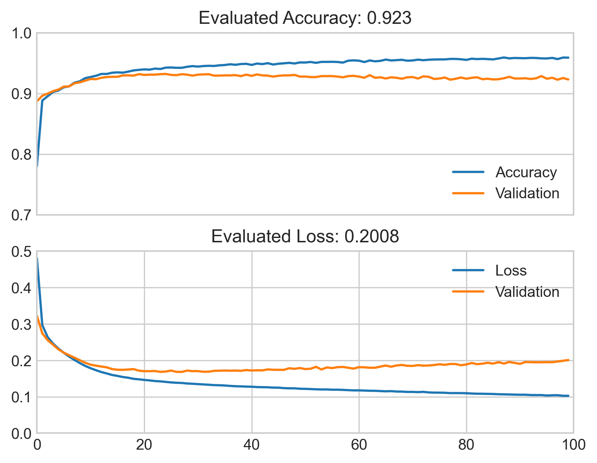

Neural Network
Business growth is deterministic on many factors - all of which revolve around the lifeblood that governs a businesses success.
The customer. Without the customer a business is without purpose.
So of course the main focus of a business must be to capture and retain their customers.
While capture is undeniably important, it is also within the companies best interest to retain those captures.
That best interest is what the focus of this website is on - the measurement of customer loss: Churn.
Specifically, we wanted to build predictive models off credit card churn - the model demonstrated on this page is a neural network model.
Demonstrated here is an artificial neural network (ANN) that attempts to learn from a dataset composed of credit card user characteristics
and predict the retention of a card user from what was learned.


Figure 1: Network Model Architecture, provided by TensorFlow Keras Utilities. Visually adjusted for presentation
Figure 1 should give you an idea of the layout of the model. This model uses 37 features provided by the dataset and therefore the input layer contains 37 nodes. Next is the hidden layer which utilizes 25 nodes, which is rounded up from 2/3rds of the features/inputs (24.66666). The next layer is a dropout layer, which was utilized in response to overfitting observed in the initial model shown below as Figure 2. Finally, the last layer is the output layer consisting of 1 node. Shown in red in Figure 1 are the activation functions used. ReLu for the hidden layer and Sigmoid for the output layer.
Initial Model: Accuracy & Loss: Training vs Validated
Figure 2: The initial model tested with no optimization. Visualization output from Matplotlib.
Figure 2 shows the initial training accuracy and loss plotted alongside the validated accuracy and loss. The models parameters are as follows:
| Parameter | Value | Rationale |
|---|---|---|
| Inputs | 37 | Total amount of features used from dataset |
| Hidden Nodes | 25 | 2/3 of Inputs/Features |
| Outputs | 1 | Sigmoid function in output layer allows for single output binary classification |
| Epochs | 100 | Arbitrary. Dataset is small so therefore the amount of iterations required for convergence is likely low. |
Optimized Model: Accuracy & Loss: Training vs Validated
Figure 3: Model using L2 Regularization and Dropout.
Figure 3 shows showcases how using two optimization techniques that adjust the way the model interacts with the data provided, we are able to achieve training and validation results that align with one another. The optimizations we used are: L2 Regularization: Adjusts the weights of the models layers to be smaller in order to adjust for overfitting. Briefly, this adjusts the overall influence of features and improves the way the model 'thinks' about those features as predictors. As a human, L2 Regularization could be thought of as allowing yourself to view situations from a new point of view, instead of judging situations based on constrained, comfortable experiences. As you add perspective to your life (L2 Regularization) your judgment (outcome) is made more robust and generalized due to your own experiences(weights) not holding as much influence(smaller weights provided by L2 regularization) over new and unusual situations(new/unseen data). Dropout: Dropout does as its name implies - it drops out input and hidden layer nodes during model training. This adjusts for overfitting by not allowing the model to rely on certain nodes and create patterns from these nodes - thus allowing for the independence of each node. The independence of the node is important in this scenario of overfitting as it disallows a node's tendency to fix the mistakes of other nodes. Briefly, with dropout, each node is made more sufficient at responding to new/unseen data. In a human's perspective, dropout is like not forming bad habits based on the people around you by not interacting with them (or in this case, removing their existence from your life).
Analysis
With the optimized model(Figure 3) no longer suffering from overfitting, we proceeded with analytics of the prediction results. Figure 4: Shows the ROC((receiver operating characteristic) Curve, a type of graph that is meant to showcase the ability of a binary classification model - essentially it rates if the True(1) and False(0) outcome predictions from the model are True Positives or False Positives by plotting the TPR(True Positive Rate) and the FPR(False Positive Rate). In order to properly sort these results a measure called the AUC(Area Under the ROC curve) is used. The area the AUC measures the probability of each potential output from the model, classified as True Positive, False Positive, True Negative, and False Negative. Essentially, this plot tells us, within probability, how true are the predictions the model provides. For this plot, a probability >.5 was used. Figure 5: Shows a binary confusion matrix, a visualization of the TPR and FPR measured in Figure 4. The confusion matrix simply lists the amount of each outcome of the True/False Positives and True/False Negatives.
AUC-ROC Curve
Figure 4: AUC-ROC curve modeled using Matplotlib.

Figure 5: Confusion Matrix. The forward / diagonal represents the incorrect predictions[70,83]. The backward \ diagonal represents the correct predictions[2081,298]
The neural network performs well when viewed on its own. Simply by introducing optimizations to the models layers/nodes the model was able to achieve a good fit against new/unseen data, achieving an accuracy of 93.8% and reducing loss from .2008 to .1718, trending higher for accuracy and climbing lower for loss whose ideal value is 0. Ultimately, the model trends towards being useful and with further optimizations looking into the dataset and adjusting the features used, the model may achieve higher accuracy and a loss closer to 0. Looking at the model when compared to the other Machine Learning models showcased on this website using the same features, the Neural Network performs 2nd best, falling short of the Random Forest Classifier, which achieved an accuracy of 97%. Overall, the Random Forest Classifier is likely most preferable for a machine learning model for credit card user churn predictive modeling performance. While a neural network has potential to reach the same percentage, it would be with adjustment and optimization, adjustment and optimization that the Random Forest model does not need.